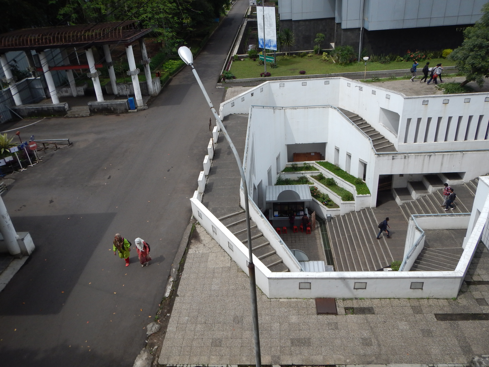
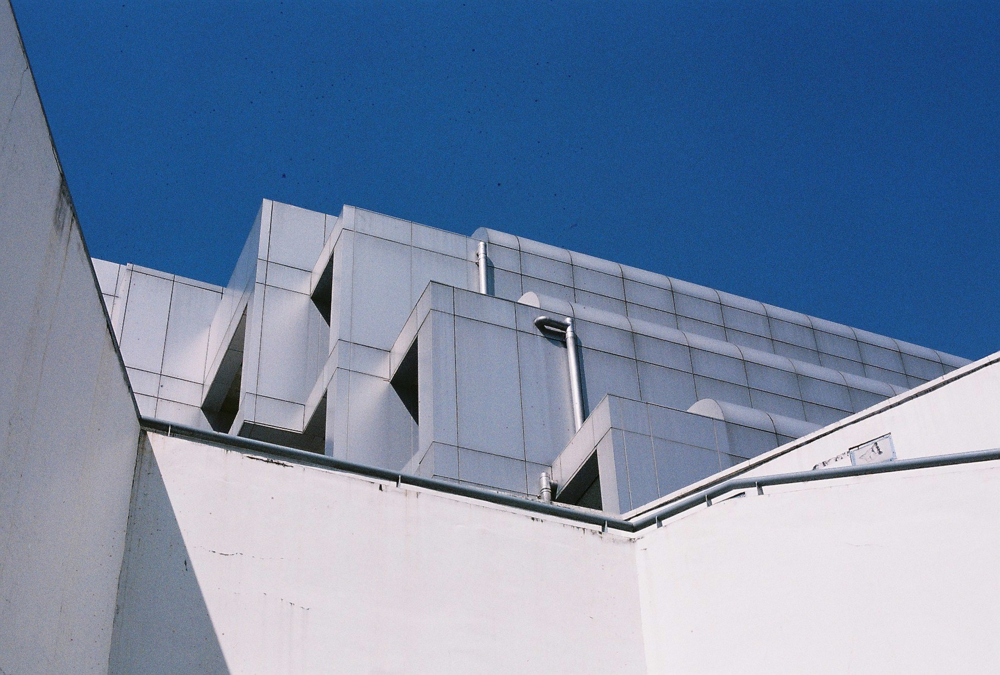

Kehidupan di Kampus
Lingkungan Kampus
ITB terletak di tengah kota Bandung dan dikelilingi oleh daerah pepohonan sehingga lingkungan di ITB terkesan sejuk dan cocok untuk belajar. Selain itu, laboratorium teknik STEI sendiri adalah salah satu dari empat laboratorium teknik kembar di ITB, lebih spesifiknya atas nama Gedung Achmad Bakrie. Hal ini menjadikan kuliah di STEI sebuah pengalaman yang ikonik bagi para mahasiswanya. Pengalaman ikonik lainnya termasuk mengikuti orientasi mahasiswa baru dan orientasi jurusan selepas program Tahap Persiapan Bersama.
Selain dikelilingi oleh pepohonan, lokasi ITB yang strategis juga menjadi appeal bagi mahasiswanya dikarenakan lokasi rekreasi dan fasilitas kesehatan di sekitarnya. Selain mal-mal dan tempat makan yang mengitarinya, terdapat Rumah Sakit St. Boromeus dan Kebun Binatang ITB. Oleh karena itu, banyak mahasiswa, termasuk mahasiswa STEI, sering terlihat berada di tempat-tempat tersebut sembari mengerjakan tugas atau hanya sekedar berbincang santai.
Mahasiswa di STEI
Biasanya di lingkungan ITB, mendengar nama "STEI" dikaitkan dengan mahasiswa-mahasiswa yang "imba". Kata "imba" ini biasa berarti bahwa mereka mempunyai indeks prestasi atau kemampuan sains di atas mahasiswa rata-rata, ditunjukkan dengan indeks prestasi yang biasanya hampir sempurna atau capaian prestasi yang tiada habisnya. Kata "imba" ini sendiri menjadi sebuah stereotipe dari mahasiswa STEI. Tidak hanya itu juga, namun mahasiswa STEI biasa dikaitkan dengan kata "wibu", yang berarti penyuka atau penggemar kartun Jejepangan.
Benar adanya bahwa mahasiswa ITB "wibu", namun tidak semuanya bisa dikatakan "imba". Kebanyakan mahasiswa STEI dikenal akan prestasi mereka tidak hanya karena "imba", namun juga karena kerja keras dan hubungan yang dibangun di balik semua proses itu. Oleh karena itu, sering juga muncul istilah "ambis", namun mahasiswa STEI sendiri, sepengalaman saya sebagai mahasiswa baru, tidak se-"ambis" itu juga. Kebanyakan waktu kami menghabiskan waktu saling bercerita atau main bareng di server Discord (maklum, keadaan penulis dalam kuliah online). Beberapa mahasiswa juga biasa berkumpul untuk belajar bareng melalui wadah online. Hubungan online ini juga secara langsung, menurut saya, membangun relasi yang lebih baik karena mudahnya tersalurnya informasi dan kekerabatan daring yang lebih erat bagi sebagian kalangan (khususnya kalangan "wibu").

Tidak hanya dikenal atas IP yang bagus atau kerja keras, beberapa mahasiswa STEI juga biasa kerap aktif di unit-unit kegiatan mahasiswa atau organisasi-organisasi kepanitiaan luar kampus. Mahasiswa-mahasiswa ini kerap bergabung dan bekerja di bidang belakang layar, seperti pembuatan website, pertanggungjawaban atas kebutuhan IT sebuah organisasi, atau hal-hal yang berhubungan dengan komputer. Maklum, selain stereotipe bahwa "mahasiswa STEI jago ngotak-ngatik komputer", mahasiswa STEI juga biasanya memanfaatkan keadaan ini untuk belajar lebih lanjut terkait programming atau utilisasi komputer. Sebagian dari mereka juga merupakan aktivis di lingkungan kampus atau kerap menjadi "mahasiswa berprestasi" dengan mengikuti berbagai lomba di berbagai bidang, mulai dari olimpiade sains hingga lomba game development atau competitive programming. Hal ini sendiri menunjukkan bahwa mahasiswa-mahasiswa STEI mempunyai pengaruh positif bagi kampus dan lingkungannya.